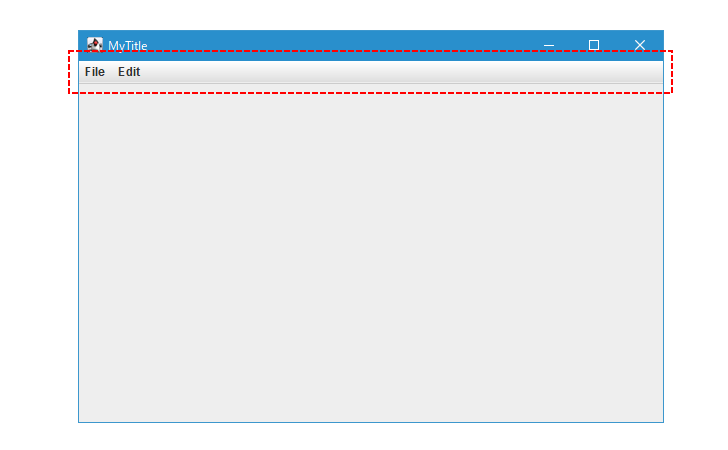
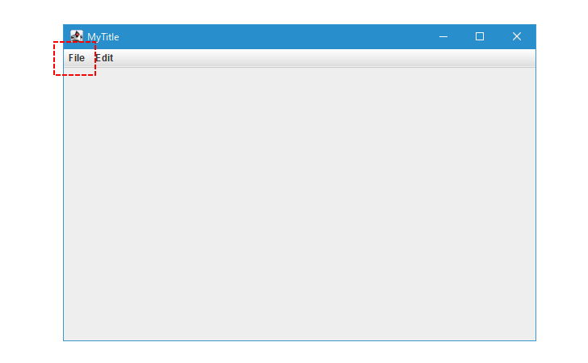
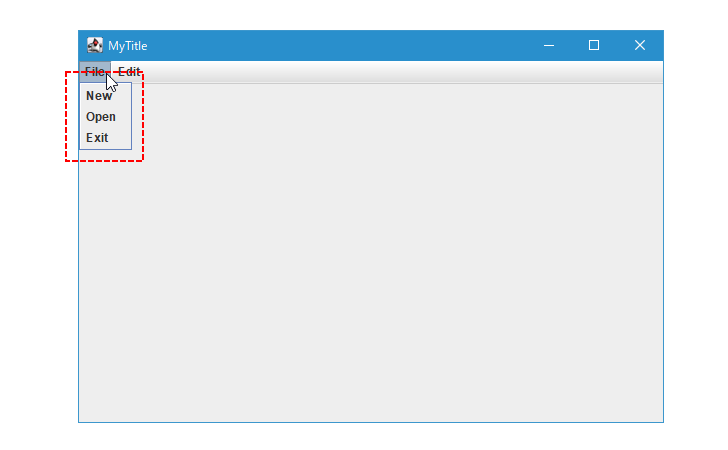
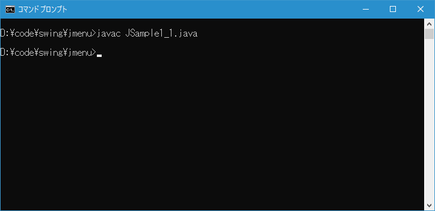
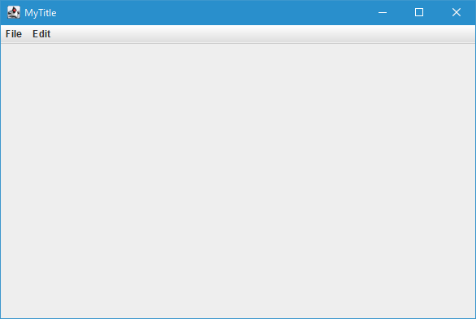
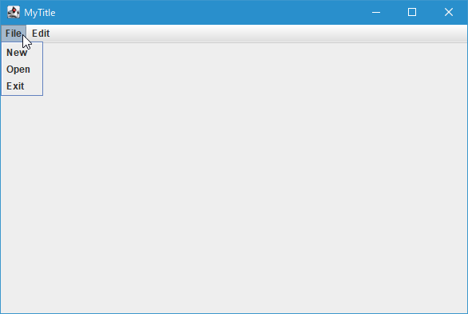
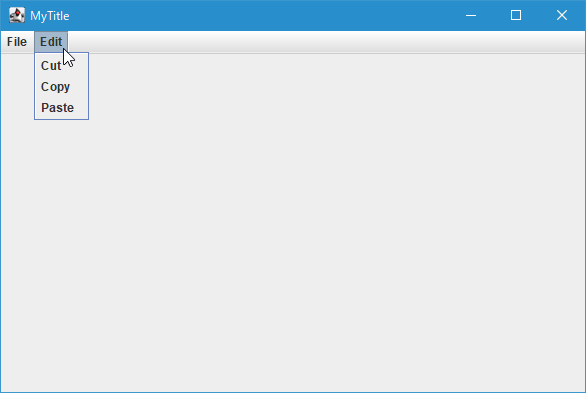

メニューバー、メニュー、メニューアイテムの作成と基本的な使い方
Swing を使ったアプリケーションでメニューを利用するには、メニューバー、メニュー、メニューアイテム、をそれぞれ作成する必要があります。メニューバーは JMenuBar クラス、メニューは JMenu クラス、メニューアイテムは JMenuItem クラスを使います。ここではそれぞれのクラスの定義やコンストラクトの確認、およびメニューバーにメニューを、メニューにメニューアイテムを追加してメニューを作成する基本的な使い方について解説します。
JMenuBarクラスの定義とコンストラクタ
メニューバーはメニューの中の次の部分です。

JMenuBar クラスは次のように定義されています。
java.lang.Object
java.awt.Component
java.awt.Container
javax.swing.JComponent
javax.swing.JMenuBar
public class JMenuBar
extends JComponent
implements Accessible, MenuElement
メニューバーはコンポーネントの親クラスである JComponent クラスのサブクラスとなっています。
JMenuBar クラスをを利用するにはコンストラクタを使って JMenuBar クラスのオブジェクトを作成します。次のようなコンストラクタが用意されています。
JMenuBar()
新しいメニュー・バーを作成します。
メニューバーのコンストラクタは一つで次のように定義されています。
public JMenuBar()
新しいメニュー・バーを作成します。
実際の使い方は次のようになります。
JMenuBar menubar = new JMenuBar();
JMenuクラスの定義とコンストラクタ
メニューはメニューの中の次の部分です。

JMenu クラスは次のように定義されています。
java.lang.Object
java.awt.Component
java.awt.Container
javax.swing.JComponent
javax.swing.AbstractButton
javax.swing.JMenuItem
javax.swing.JMenu
public class JMenu
extends JMenuItem
implements Accessible, MenuElement
メニューはコンポーネントの親クラスである JComponent クラスのサブクラスとなっています。またボタン系を扱うクラス全般の親クラスである AbstractButton クラスのサブクラスでもあります。
JMenu クラスをを利用するにはコンストラクタを使って JMenu クラスのオブジェクトを作成します。次のようなコンストラクタが用意されています。
JMenu()
テキストのない新しいJMenuを作成します。
JMenu?(String s)
指定された文字列をテキストとして持つ新しいJMenuを作成します。
JMenu?(String s, boolean b)
指定された文字列をテキストとして持ち、ティア・オフ・メニューかどうかが指定された、新しいJMenuを作成します。
JMenu?(Action a)
指定されたActionからプロパティを取得するメニューを作成します。
コンストラクタはいくつか用意されていますが、この中からメニューに表示される文字列を指定してメニューを作成するコンストラクタを見てみます。次のように定義されています。
public JMenu?(String s)
指定された文字列をテキストとして持つ新しいJMenuを作成します。
パラメータ:
s - メニュー・ラベルのテキスト
引数にはメニューに表示されるテキストを表す String クラスのオブジェクトを指定します。
実際の使い方は次のようになります。
JMenuBar menubar = new JMenuBar();
JMenu menu1 = new JMenu("File");
JMenu menu2 = new JMenu("Edit");
JMenuItemクラスの定義とコンストラクタ
メニューアイテムはメニューの中の次の部分です。

JMenuItem クラスは次のように定義されています。
java.lang.Object
java.awt.Component
java.awt.Container
javax.swing.JComponent
javax.swing.AbstractButton
javax.swing.JMenuItem
public class JMenuItem
extends AbstractButton
implements Accessible, MenuElement
メニューアイテムはコンポーネントの親クラスである JComponent クラスのサブクラスとなっています。またボタン系を扱うクラス全般の親クラスである AbstractButton クラスのサブクラスでもあります。
JMenuItem クラスをを利用するにはコンストラクタを使って JMenuItem クラスのオブジェクトを作成します。次のようなコンストラクタが用意されています。
JMenuItem()
テキストおよびアイコンを指定しないでJMenuItemを作成します。
JMenuItem?(String text)
指定されたテキストでJMenuItemを作成します。
JMenuItem?(String text, int mnemonic)
指定されたテキストおよびキーボード・ニーモニックでJMenuItemを作成します。
JMenuItem?(String text, Icon icon)
指定されたテキストおよびアイコンでJMenuItemを作成します。
JMenuItem?(Action a)
指定されたActionからプロパティを取得するメニュー項目を作成します。
JMenuItem?(Icon icon)
指定されたアイコンでJMenuItemを作成します。
メニューアイテムには文字列や画像を表示することができ、コンストラクも何を表示するのかに合わせていくつか用意されています。
最初に表示する文字列を指定してメニューアイテムを作成するコンストラクタを見てみます。次のように定義されています。
public JMenuItem?(String text)
指定されたテキストでJMenuItemを作成します。
パラメータ:
text - JMenuItemのテキスト
引数にはメニューに表示されるテキストを表す String クラスのオブジェクトを指定します。
実際の使い方は次のようになります。
JMenuBar menubar = new JMenuBar();
JMenu menu1 = new JMenu("File");
JMenu menu2 = new JMenu("Edit");
JMenuItem? menuitem1_1 = new JMenuItem?("Open");
JMenuItem? menuitem1_2 = new JMenuItem?("Exit");
メニューを作成する基本的な手順
メニューを作成する基本的な手順は、メニューバーを作成したあとでメニューを作成してメニューバーに追加します。そしてメニューアイテムを作成してメニューへ追加します。最後にフレームに対してメニューバーを追加します。
メニューバーへメニューを追加するには JMenuBar クラスで定義されている add メソッドを使います。
public JMenu add?(JMenu c)
メニュー・バーの最後に、指定されたメニューを追加します。
パラメータ:
c - 追加するJMenuコンポーネント
戻り値:
メニュー・コンポーネント
引数にはメニューバーに追加する JMenu クラスのオブジェクトを指定します。
次にメニューへメニューアイテムを追加するには JMenu クラスで定義されている add メソッドを使います。
public JMenuItem add?(JMenuItem menuItem)
このメニューの最後にメニュー項目を追加します。 追加されたメニュー項目を返します。
パラメータ:
menuItem - 追加されるJMenuitem
戻り値:
追加されたJMenuItem
引数にはメニューに追加する JMenuItem クラスのオブジェクトを指定します。
最後に作成したメニューバーをフレームに追加するには JFrame クラスで定義されている setJMenuBar? メソッドを使います。
public void setJMenuBar?(JMenuBar menubar)
このフレームのメニュー・バーを設定します。
パラメータ:
menubar - フレーム内に配置されているメニュー・バー
引数にはフレームに追加する JMenuBar クラスのオブジェクトを指定します。
実際の使い方は次のようになります。
JMenuBar menubar = new JMenuBar();
JMenu menu1 = new JMenu("File");
JMenu menu2 = new JMenu("Edit");
menubar.add(menu1);
menubar.add(menu2);
JMenuItem? menuitem1_1 = new JMenuItem?("Open");
JMenuItem? menuitem1_2 = new JMenuItem?("Exit");
menu1.add(menuitem1);
menu1.add(menuitem2);
JFrame frame = new JFrame();
frame.setJMenuBar?(menubar)
サンプルプログラム
それでは簡単なサンプルプログラムを作って試してみます。テキストエディタで次のように記述したあと、 JSample1_1.java という名前で保存します。
import javax.swing.JFrame;
import javax.swing.JMenuBar;
import javax.swing.JMenu;
import javax.swing.JMenuItem;
class JSample1_1 extends JFrame{
public static void main(String args[]){
JSample1_1 frame = new JSample1_1("MyTitle");
frame.setVisible(true);
}
JSample1_1(String title){
setTitle(title);
setBounds(100, 100, 600, 400);
setDefaultCloseOperation(JFrame.EXIT_ON_CLOSE);
JMenuBar menubar = new JMenuBar();
JMenu menu1 = new JMenu("File");
JMenu menu2 = new JMenu("Edit");
menubar.add(menu1);
menubar.add(menu2);
JMenuItem menuitem1_1 = new JMenuItem("New");
JMenuItem menuitem1_2 = new JMenuItem("Open");
JMenuItem menuitem1_3 = new JMenuItem("Exit");
JMenuItem menuitem2_1 = new JMenuItem("Cut");
JMenuItem menuitem2_2 = new JMenuItem("Copy");
JMenuItem menuitem2_3 = new JMenuItem("Paste");
menu1.add(menuitem1_1);
menu1.add(menuitem1_2);
menu1.add(menuitem1_3);
menu2.add(menuitem2_1);
menu2.add(menuitem2_2);
menu2.add(menuitem2_3);
setJMenuBar(menubar);
}
}
次のようにコンパイルを行います。
javac JSample1_1.java

コンパイルが終わりましたら実行します。
java JSample1_1
メニューを作成しました。メニューバーには 2 つのメニューが追加されています。

それぞれのメニューをクリックすると、メニューに追加されているメニューアイテムが表示されます。


-- --
メニューを構成する各クラスの定義やコンストラクトの確認、およびメニューバーにメニューを、メニューにメニューアイテムを追加してメニューを作成する基本的な使い方について解説しました。
( Written by Tatsuo Ikura )

著者 / TATSUO IKURA
初心者～中級者の方を対象としたプログラミング方法や開発環境の構築の解説を行うサイトの運営を行っています。